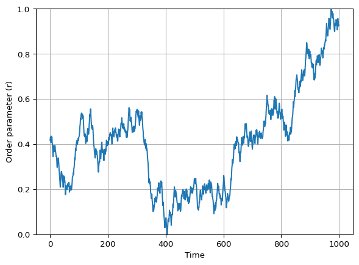
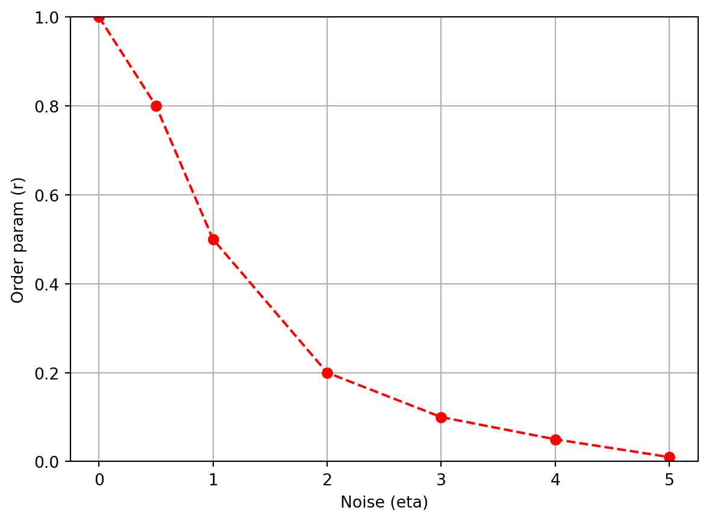

Vicsek Lab: Interactive Animation
Module 2: Synchronization and Collective Behaviour
Optional extension
This page is optional. It builds an interactive Vicsek animation in Matplotlib, one step at a time (Vicsek et al. 1995; Hunter 2007).
You already have a basic animation of particles moving (Animation). Now you will add: - an order parameter plot, - a noise diagnostic plot, - and sliders to explore the parameter space.
At the end, you should have a \(2 \times 2\) layout:
- Top-left: particle positions (with a tail).
- Top-right: order parameter over time.
- Bottom-left: sliders.
- Bottom-right: order parameter vs noise (a crude “phase diagram”) as you explore.
The imports remain the same as in the previous page, but now you also import Slider from matplotlib.widgets to create interactive sliders.
Make a new script named vicsek_animation_full.py for this page, so you can compare it with the simpler version from the previous page (and you don’t lose the other functional version). You can copy-paste the code from the previous page and then incrementally add the new features.
Keep it incremental: Run your code after each step. If something breaks, you only have one new thing to debug.
The Main Function
You will need to modify your run_simulation() function to include the new plots and sliders. The structure will be similar to the simplified version from the previous page, but with additional initialization for the order plot, noise plot, and sliders.
Exercise
Extend the skeleton of run_simulation() with the sliding window and the two new containers. Fill in the defaults and the initial state as in Animation.
def run_simulation(dt: float = 1.0) -> None:
"""Run an interactive Vicsek animation (Matplotlib)."""
# TODO: choose defaults
num_boids =
noise_eta =
box_size =
radius_interaction =
v0 =
# Sliding window length for order parameter plot
ORDER_WINDOW = 3000
# Tail length for trajectory visualization
TAIL_LEN = 20
# TODO: initialize the state (xy, theta)
# store order parameter history
ls_order_param = []
# store explored noise->order mapping
dict_noise = {}
# We stop here for now.
return
Solution
def run_simulation(dt: float = 1.0) -> None:
"""Run an interactive Vicsek animation (Matplotlib)."""
num_boids = 100
noise_eta = 0.5
box_size = 10.0
radius_interaction = 1.0
v0 = 0.03
# Sliding window length for order parameter plot
ORDER_WINDOW = 3000
# Tail length for trajectory visualization
TAIL_LEN = 20
xy, theta = initialize_particles(num_boids, box_size)
# store order parameter history
ls_order_param = []
# store explored noise->order mapping
dict_noise = {}
Why a sliding window?
If you store the full time series, your plot and memory will grow forever.
A fixed-length list (window) gives you: - stable performance, - and a plot that focuses on recent behavior.
Create the Figure Layout
You want a large space for particles, and a smaller area for sliders + extra diagnostics.
Create the subplots and name the axes.
def make_figure():
# Create a 2x2 grid
fig, axs = plt.subplots(
2, 2,
figsize=(12, 8),
height_ratios=[4, 1], # top row larger than bottom row
)
ax_plane: Axes = axs[0, 0]
ax_order: Axes = axs[0, 1]
ax_sliders: Axes = axs[1, 0]
ax_noise: Axes = axs[1, 1]
# Sliders live in an empty axis
ax_sliders.axis("off")
return fig, ax_plane, ax_order, ax_sliders, ax_noiseKeep the ax_plane name the same, as that is where the particles will be plotted. The new axes are ax_order for the order parameter plot, ax_sliders for the sliders, and ax_noise for the noise diagnostic plot.
Draw Particles
This stays the same as before.
Initialize the Order-Parameter Plot
The next plot will show the order parameter \(r\) over time.
You update the line data at each animation frame, using the ls_order_param list to store the recent history of \(r\).
Exercise
Create an empty line in ax_order and set labels/limits.
def init_order_plot(ax_order: Axes, order_window: int):
# TODO: create the line artist
# HINT: this is similar to how you created the particle artists,
# but with empty data
# TODO: set axes cosmetics
# limits, labels, grid
# TODO: return relevant variables
Solution
def init_order_plot(ax_order: Axes, order_window: int):
(line_order_param,) = ax_order.plot([], [])
ax_order.set_xlim(0, order_window - 1)
ax_order.set_ylim(0, 1)
ax_order.set_xlabel("Time")
ax_order.set_ylabel("Order parameter (r)")
ax_order.grid(True)
return line_order_paramInitialize the Noise Diagnostic Plot
This plot tracks how the order parameter \(r\) changes as you explore different noise levels \(\eta\) with the slider. You expect to see a curve that starts near \(r=1\) at low noise, and drops towards \(r=0\) as noise increases. See Figure 2 for an example (using mock data).

To build this plot, maintain a dictionary dict_noise that maps noise levels to the recent average of the order parameter. Each time the animation updates, compute the recent average of \(r\) and update this dictionary with the current noise level. Then set the line data for the noise plot using the items in this dictionary.
\[ \eta \mapsto \text{(recent average of } r \text{)} \]
You fill dict_noise in the update function on Sliders. Here you only create the empty plot.
Exercise
Initialize an empty line (red markers) in ax_noise.
def init_noise_plot(ax_noise: Axes):
# TODO: create the line artist
# TODO: set limits and labels (match your slider range)
# return
Solution
The x-limits match the range of the noise slider, \(0 \le \eta \le 5\).
def init_noise_plot(ax_noise: Axes):
(line_noise,) = ax_noise.plot([], [], color="red", marker="o", linestyle="--")
ax_noise.set_xlim(0, 5)
ax_noise.set_ylim(0, 1)
ax_noise.set_xlabel("Noise (eta)")
ax_noise.set_ylabel("Order param (r)")
return line_noiseReferences
Hunter, John D. 2007. “Matplotlib: A 2D Graphics Environment.” Computing in Science & Engineering 9 (3): 90–95. https://doi.org/10.1109/MCSE.2007.55.
Vicsek, Tamás, András Czirók, Eshel Ben-Jacob, Inon Cohen, and Ofer Shochet. 1995. “Novel Type of Phase Transition in a System of Self-Driven Particles.” Physical Review Letters 75 (6): 1226.